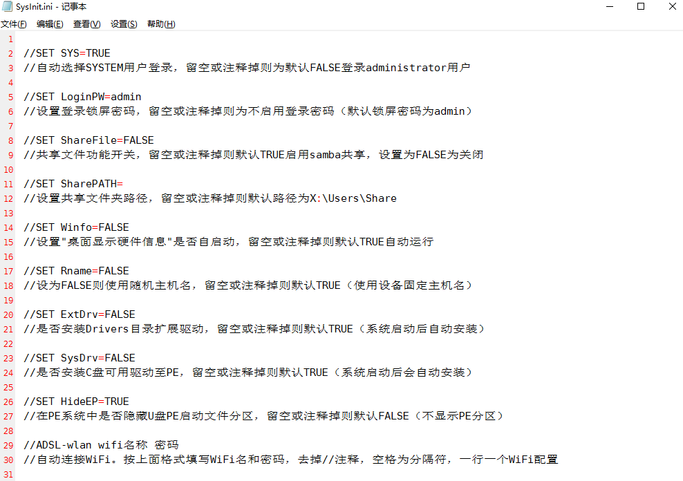
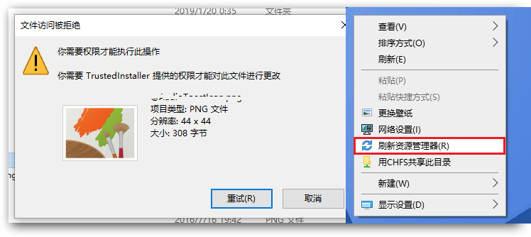

此Windows10PE支持Administrator账户登录、可切换System账户，集成诸多维护工具、支持常用软件安装运行，可在线下载更多工具，支持网络，可安装自定义添加的外置驱动及软件，可外置扩展系统组件......支持蓝牙、打印、摄像头、浏览器、影音播放组件的全功能PE（可根据自身需求增加或删除部分功能）。
内置功能：网络、打印机、摄像头、蓝牙、MSI、WMI、VBS、ISCSI、网络SMB共享、mstsc(远程桌面连接)、MTP(USB连接手机进行文件共享)、RNDIS(使用手机共享网络)、BitLocker(磁盘加锁 磁盘解锁)、支持：Intel11、12代驱动
PE加载系统后会自动安装所需驱动、自动加载硬盘上离线系统的网卡驱动并自动联网、自动建立SMB共享目录，等等.....可以临时应急替代正常系统使用。
Ctrl+↓隐藏任务栏；Ctrl+↑ 不隐藏任务栏。
可根据需求修改配置文件定义自己的PE设置项。

自定义驱动包可放置在U盘\PEsoft\Drivers\目录下面
自定义PEtools扩展工具包可放置在U盘\PEtools\目录下面，可执行文件（exe、cmd、vbs、msi）放置在U盘\PEtools\Program\目录里面
注：
若出现系统权限不足，请在桌面空白处点击鼠标右键-刷新资源管理器，然后再重新尝试操作。

安装方法：
下载WinPE安装工具，快速安装至U盘、或生成ISO文件(可使用其他工具安装至U盘或给虚拟机使用)。